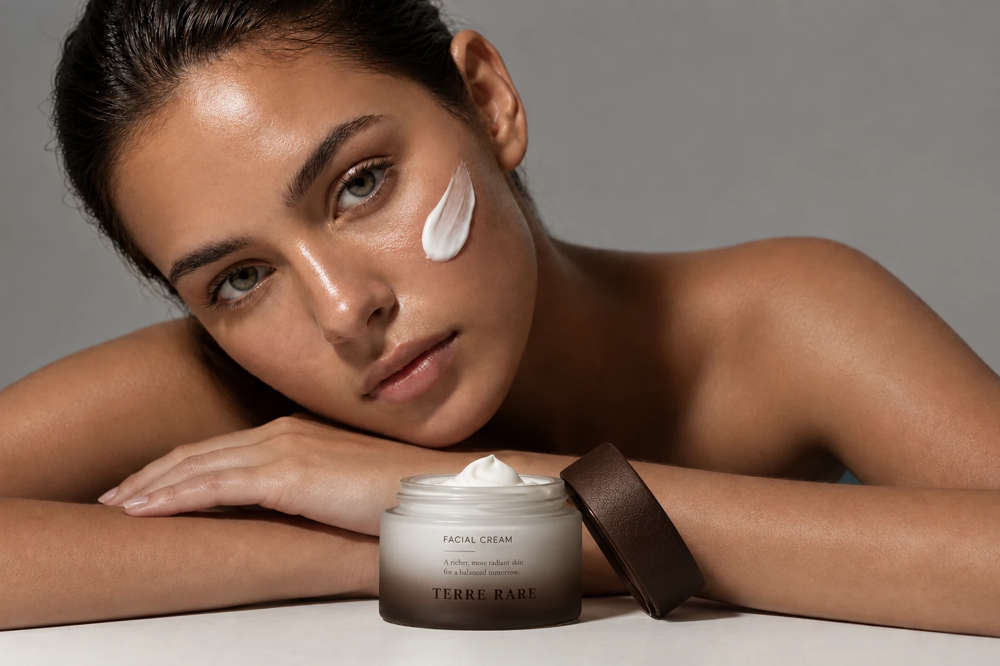
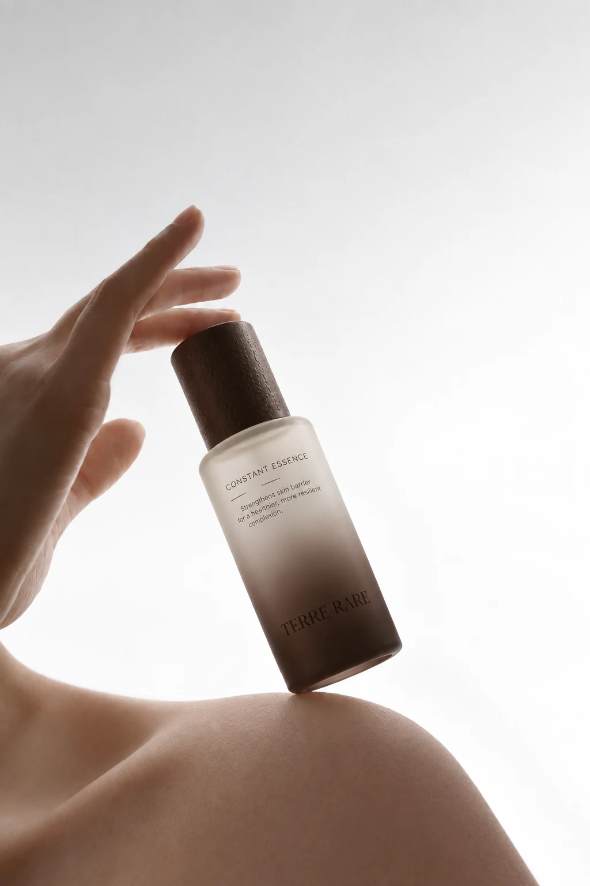

Facial Cleanser
Cleanse

Terre Rare brings botanical inspiration together with scientific precision. Our starting point is a question: what does each ingredient bring to the formula?
A clear account of what an ingredient is and where it comes from.
Explore traceabilityPurposeFrom the choice of an ingredient to its place in a finished product.
Read the journalEssentialsA focused collection, with a clear role for every product.
Why fewerThe first ingredient profile will be published when its identity and sourcing details are confirmed.
Cleanse. Concentrate. Moisturise.
Cleanse
Concentrate
Moisturise
Rare ingredients. Precise formulations. Essential skincare.
A considered routine begins with a clear purpose for each product. Discover the thinking behind our focused collection.
Read Why Fewer